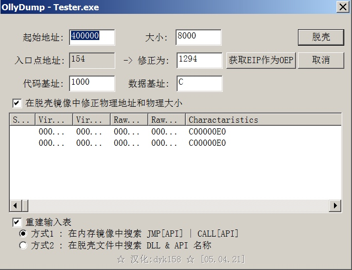
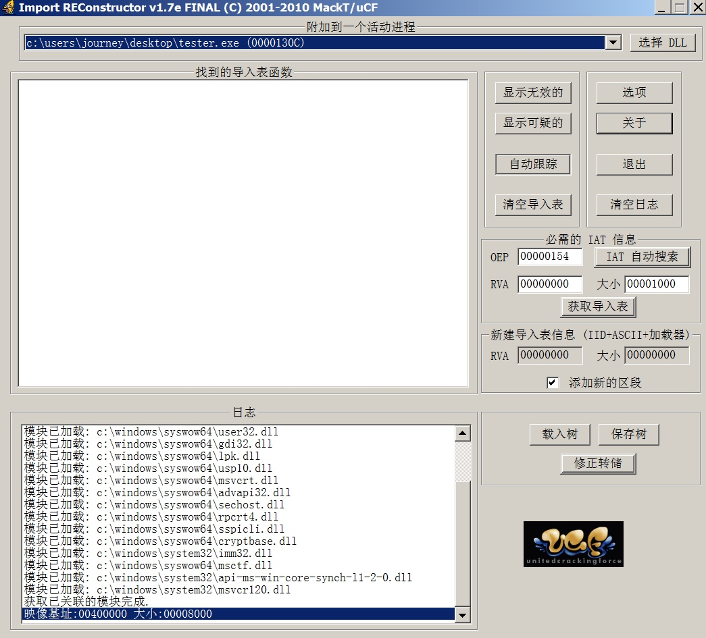
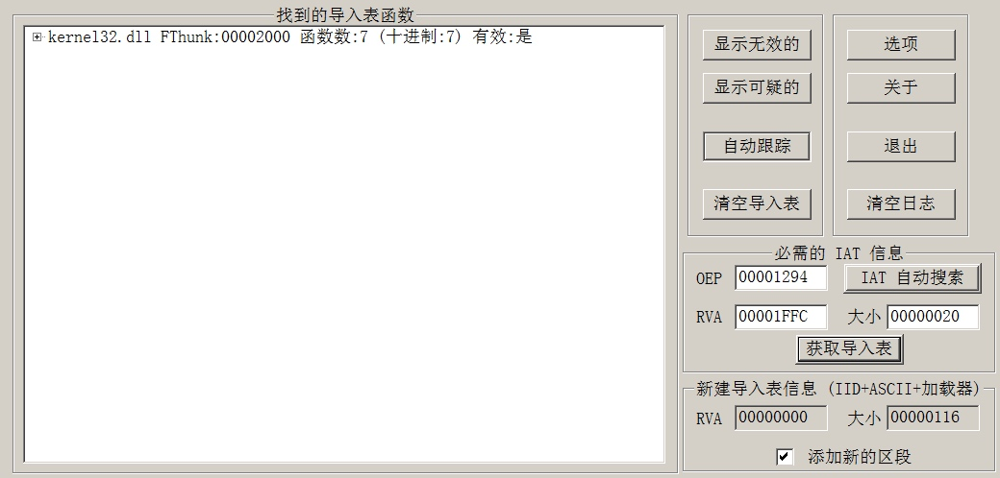
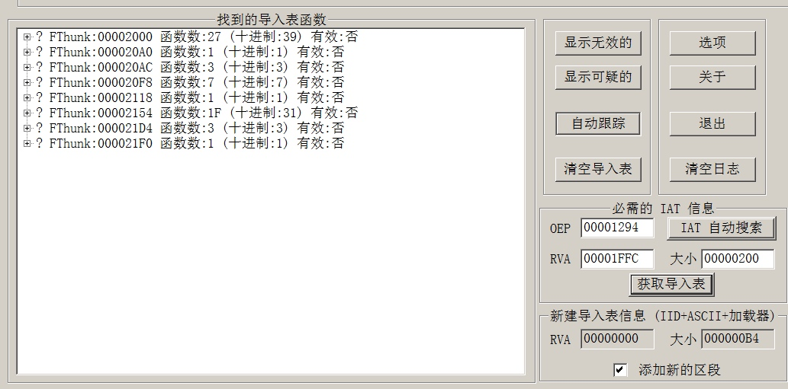
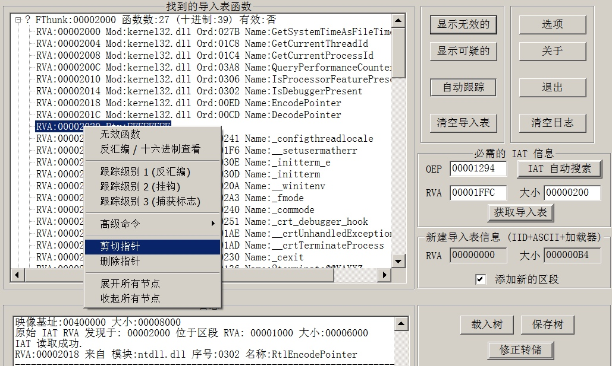
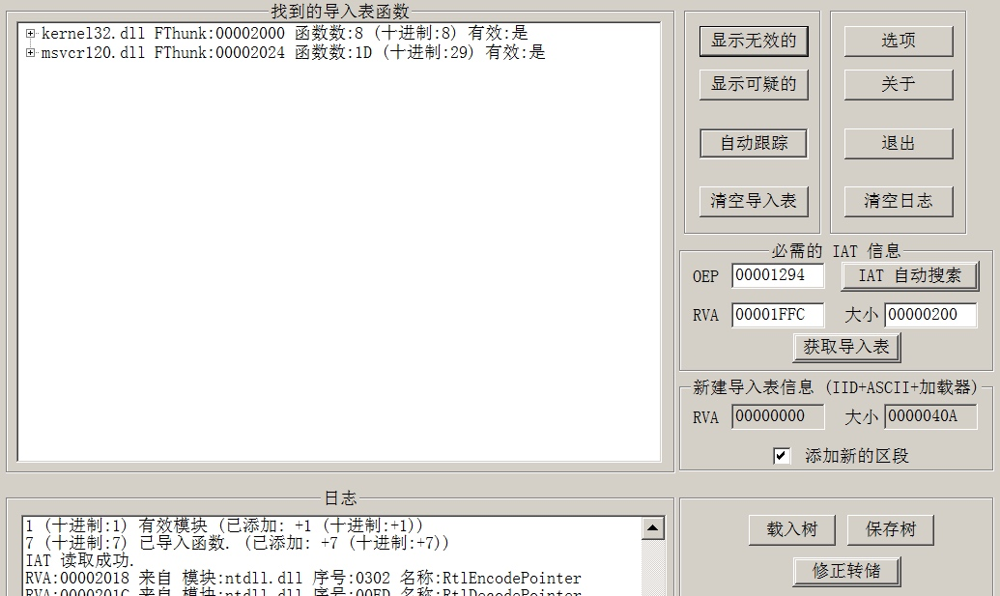

FSG是一款压缩壳，它的压缩强度比ASPack更好一点！一般压缩壳的OEP如果发现PUSHAD 、PUSHAF等保存环境的汇编指令，我们可以使用ESP定律来找到原始程序OEP的位置。
入口特征
00400154 > 8725 787A4000 xchg dword ptr ds:[0x407A78],esp
0040015A 61 popad
0040015B 94 xchg eax,esp
0040015C 55 push ebp
0040015D A4 movs byte ptr es:[edi],byte ptr ds:[esi]
0040015E B6 80 mov dh,0x80
入口点没有发现PUSHAD或其他保存环境的指令，所以F8单步一直往下走。
遇到循环
00400175 FF13 call dword ptr ds:[ebx]
00400177 12C0 adc al,al
00400179 ^ 73 FA jnb short Tester.00400175
0040017B 75 3A jnz short Tester.004001B7
0040017D AA stos byte ptr es:[edi]
0040017E ^ EB E0 jmp short Tester.00400160
00400180 FF53 08 call dword ptr ds:[ebx+0x8]
00400183 02F6 add dh,dh
单步到00400179就会遇到一个循环，F4跳出循环，直接跳到00400183,继续单步走
遇到大跳转
004001B7 56 push esi
004001B8 8BF7 mov esi,edi
004001BA 2BF0 sub esi,eax
004001BC F3:A4 rep movs byte ptr es:[edi],byte ptr ds:[>
004001BE 5E pop esi
004001BF ^ EB 9F jmp short Tester.00400160
004001C1 5E pop esi
004001C2 AD lods dword ptr ds:[esi]
004001C3 97 xchg eax,edi
004001C4 AD lods dword ptr ds:[esi]
004001C5 50 push eax
继续单步走后发现在004001BF这行指令是一个很大的往上的跳转，这时不要动，往下翻一番，可以看到三个连着的跳转
发现OEP
004001C6 FF53 10 call dword ptr ds:[ebx+0x10]
004001C9 95 xchg eax,ebp
004001CA 8B07 mov eax,dword ptr ds:[edi]
004001CC 40 inc eax
004001CD ^ 78 F3 js short Tester.004001C2
004001CF 75 03 jnz short Tester.004001D4
004001D1 FF63 0C jmp dword ptr ds:[ebx+0xC]
004001D4 50 push eax
004001D5 55 push ebp
004001D6 FF53 14 call dword ptr ds:[ebx+0x14]
入口点就在JMP的地方，直接F4到004001D1，然后单步一下就到了OEP~
到达入口的后可能发现反汇编代码是一个字节一个字节展示出来的，像这样！
00401294 E8 db E8
00401295 E8 db E8
00401296 02 db 02
00401297 00 db 00
00401298 00 db 00
00401299 E9 db E9
0040129A 91 db 91
0040129B FE db FE
0040129C FF db FF
0040129D FF db FF
0040129E 55 db 55 ; CHAR 'U'
0040129F 8B db 8B
004012A0 EC db EC
004012A1 FF db FF
004012A2 15 db 15
004012A3 14 db 14
004012A4 20 db 20 ; CHAR ' '
004012A5 40 db 40 ; CHAR '@'
这时候按下快捷键CTRL+A就可以看到原本OEP处代码的样子了！
00401294 E8 E8020000 call Tester.00401581
00401299 E9 91FEFFFF jmp Tester.0040112F
0040129E 55 push ebp
0040129F 8BEC mov ebp,esp
004012A1 FF15 14204000 call dword ptr ds:[0x402014] ;[IsDebuggerPresent
004012A7 6A 01 push 0x1
004012A9 A3 54334000 mov dword ptr ds:[0x403354],eax
004012AE E8 59050000 call Tester.0040180C ; jmp 到 msvcr120._crt_debugger_hook
004012B3 FF75 08 push dword ptr ss:[ebp+0x8]
004012B6 E8 57050000 call Tester.00401812 ; jmp 到 msvcr120.__crtUnhandledException
004012BB 833D 54334000>cmp dword ptr ds:[0x403354],0x0
004012C2 59 pop ecx
004012C3 59 pop ecx
004012C4 75 08 jnz short Tester.004012CE
004012C6 6A 01 push 0x1
004012C8 E8 3F050000 call Tester.0040180C ; jmp 到 msvcr120._crt_debugger_hook
004012CD 59 pop ecx
004012CE 68 090400C0 push 0xC0000409
004012D3 E8 40050000 call Tester.00401818 ; jmp 到 msvcr120.__crtTerminateProcess
004012D8 59 pop ecx
004012D9 5D pop ebp
004012DA C3 retn
使用OllyDump脱壳
00401294 E8 E8020000 call Tester.00401581
00401294 是我们找到的原始程序的OEP地址，1294是OEP的偏移。使用OD的插件OllyDump
来脱壳，安装好插件后，右键OEP地址所在行，选择使用OllyDump脱壳调试程序菜单项。

这里我们需要注意两点：
- 未加壳程序的起始地址和入口点偏移要填写正确，例如我们刚才找到的OEP地址是
00401294，那么这个程序的原始加载地址就是00400000，入口点偏移是1294 - 取消打钩左下角的
重建输入表，因为有时会出现BUG
然后点击右上角脱壳按钮，保存到另一个文件，dump.exe
此时我们完成了手动脱壳的一大部分，程序dump.exe就是原始未加壳的程序，但是还不能双击直接运行，因为需要修复一下导入表
使用ImportRCE修复导入表
刚才脱壳完成后，OD先不要关闭，最小化，使我们的加壳程序保持运行在内存中，然后右键选择以管理员权限运行打开我们的ImportRCE导入表修复工具。

点击最上边的下拉三角按钮，选择我们正在使用OD调试的加壳程序，Tester.EXE，然后在右侧配置区域配置一下OEP，输入我们刚才得到的OEP偏移1294，然后点击旁边的IAT 自动搜索按钮，然后点击获取导入表按钮。

发现只获取到了kernel32.DLL这个模块的导入表信息，这是不正常的，我们可以修改一下获取导入表的范围，改成200，然后依次单击按钮清空导入表、获取导入表

现在可以看到获取了很多项导入表函数，我们点击显示无效的按钮，可以看到有一个无效的函数指针被选中，右键这个无效函数，选择剪切或删除函数指针

剪切完成后，可以看到现在变成了两个DLL模块

现在已经完成99%了，最后点击右下角的修正转储按钮，弹出一个对话框，选择刚才dump.EXE的程序！
修复完成，双击运行一下dump.EXE, 可以成功运行！